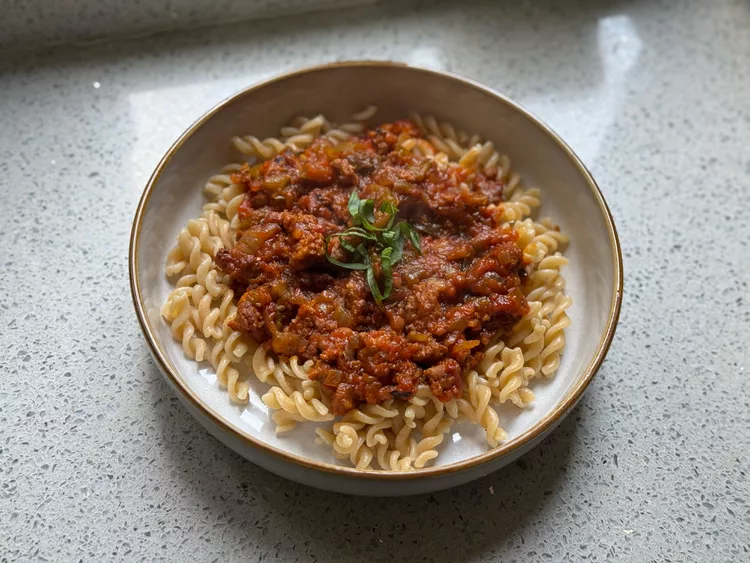

Nonnas Recipe

How To Make the Sunday Gravy From Netflixs “Nonnas”
boil the cooker and do the dish
Ingredients:
- 2 red apples, quartered
- mangos
- oat
- crushed tomatoes
Steps
- In a bowl, combine vinegar, sugar, salt, and pepper.
- Add sliced cucumbers and toss to coat.
- Let it marinate for 30 minutes before serving.
Back